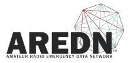
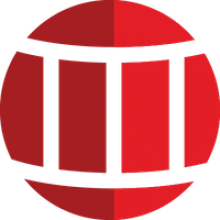
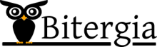

All Things Open is the largest open source/tech/web event on the U.S. east coast, and one of the largest in the world. In 2019 nearly 5,000 registered and attended (4,985 to be exact) from 41 U.S. states and 27 countries. Five thousand plus (5,000+) are expected in 2020. Diversity and inclusion are also priorities, and have been since the conference was first hosted in 2013.
Exhibitors

AREDN™ (Amateur Radio Emergency Data Network) organization develops open source solutions in the Amateur Radio Community for purposes of Emergency Communications using wireless high speed data technologies.
The AREDN team builds upon linux, OLSR, and OpenWRT using commercial Wireless ISP devices and extending frequencies across a wide range of Amateur only microwave bands. The result is a commercial grade off-the-grid viable alternative network suitable for restoring some degree of inter/intra‐net connectivity “when all else fails”.
Silver Sponsor
Arista Networks pioneered software-driven, cognitive cloud networking for large-scale datacenter and campus environments. Arista's award-winning platforms, ranging in Ethernet speeds from 10 to 400 gigabits per second, redefine scalability, agility and resilience. Arista has shipped more than 20 million cloud networking ports worldwide with CloudVision and EOS, an advanced network operating system. Committed to open standards, Arista is a founding member of the 25/50G consortium. Arista Networks products are available worldwide directly and through partners.
Silver Sponsor
Arm technology is at the heart of a computing and connectivity revolution that is transforming the way people live and businesses operate. Our advanced, energy-efficient processor designs have enabled intelligent computing in more than 125 billion chips. Over 70% of the world’s population are using Arm technology, which is securely powering products from the sensor to the smartphone to the supercomputer. This technology combined with our IoT software and device management platform enables customers to derive real business value from their connected devices.
Silver Sponsor
Bareos (Backup Archiving Recovery Open Sourced) is a reliable network open source software to backup, archive and restore files from all major operating systems. The fork was founded 2010 out of the bacula.org project, in order to pursue development of new capabilities and sustainable ensure it’s open source character.
Today Bareos comes with a new multi-lingual and multi-tenancy web ui including restore browser, LTO hardware encryption support, bandwidth limitation, cloud storage support, a redesigned plugin interface, among other new features.

Bastille is an open-source system for automating deployment and management of containerized applications on FreeBSD.
The BeagleBoard.org Foundation is a Michigan,USA-based 501(c)(3) non-profit corporation existing to provide education in and collaboration around the design and use of open-source software and hardware in embedded computing. BeagleBoard.org provides a forum for the owners and developers of open-source software and hardware to exchange ideas, knowledge and experience.
BigBlueButton is an open-source web conferencing system.

Silver Sponsor
Bitergia helps companies to understand software development projects that matter to them, helping within decision making process and reporting regarding community health, project sustainability, development efficiency, talent retention & acquisition, content creation, developer audience analysis and much more. With +15 years of experience in research about collaborative software development methodologies and quality models, is the market reference in analyzing software development projects and developer community
Silver Sponsor
The Ceph Foundation exists to enable industry members to collaborate and pool resources to support the Ceph project community. The Foundation provides an open, collaborative, and neutral home for project stakeholders to coordinate their development and community investments in the Ceph ecosystem.